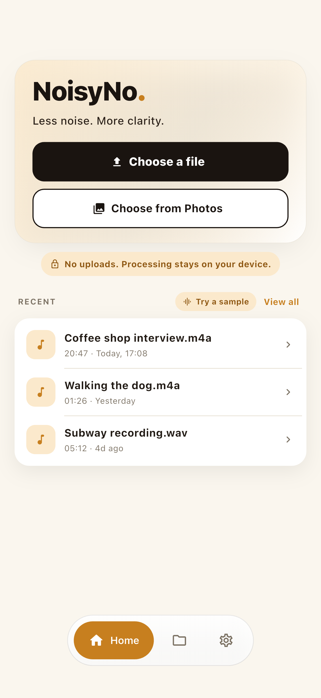
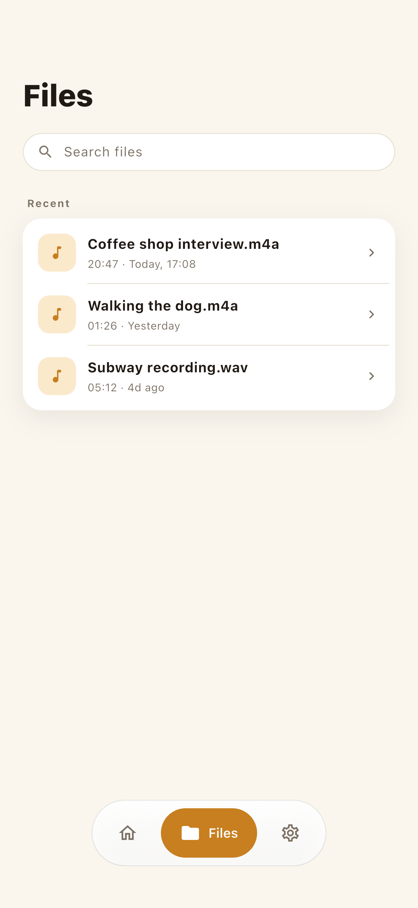
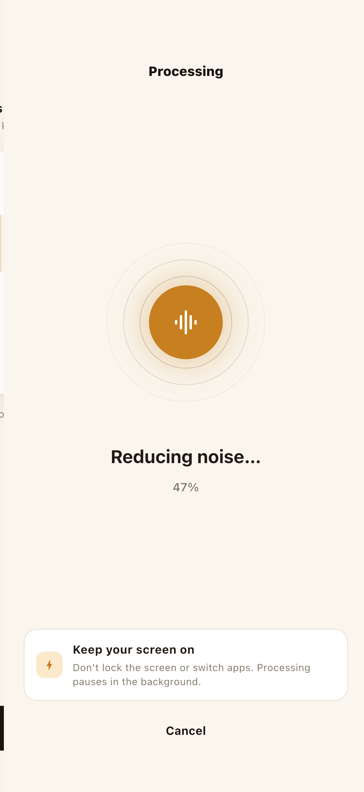
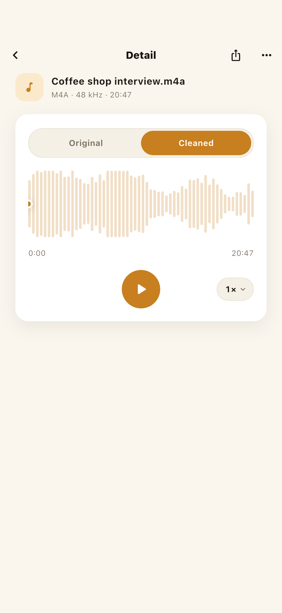
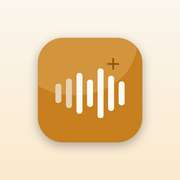

NoisyNo で会議録音をきれいにする方法 — 5ステップ
会議が Zoom、Teams、Google Meet のどれであっても、スマホで室内録音したものであっても、流れは同じです： 書き出し → 選ぶ → クリーン → 聴き比べ → 共有。アカウント不要、アップロードなし。
録音をスマホに取り込む
会議を書き出します — Zoom と Teams は MP4 動画または M4A/MP3 音声を出力します。 レコーダーならすでにローカルに保存されています。それをスマホに保存してください。変換は不要： NoisyNo は一般的な音声形式を読み込み、会議動画からそのまま音声を取り出せます。

会議ファイルを選ぶ
ファイルタブで名前で検索するか、最近の録音をスクロールして会議を選びます — 触れるのは選んだ1つのファイルだけ。先に数秒プレビューしましょう。一定したファンのうなりと、反響のある 部屋とでは仕上がり方が違うので、結果への期待値が分かります。

ノイズ除去を実行（100% 端末内）
クリーンをタップすると、内蔵モデルが声の下にある一定したノイズを軽減します — アップロード待ちなし、すべて端末内で。長い会議ほど時間はかかります。処理中はアプリを 前面に出したままにしてください。別のアプリに切り替えると処理が止まることがあります。

送り回す前に聴き比べる
オリジナル / クリーン済みの切り替えで同じ瞬間を A/B — 誰かが小声で、あるいはファンに かぶせて話す箇所を聴き、声が自然なまま残っているか確かめます。クリーン済みが失うものが多すぎても、 元ファイルはそのまま：ここで元ファイルが上書きされることはありません。


NoisyNo — ボイスノイズリムーバー
録音や動画の音声から、ファンのうなり・ヒス・風・エアコン・室内の反響音を軽減するオフラインの ボイスノイズリムーバー。処理はスマホの中で行われ、ファイルのアップロードはありません。
会議音声を端末内に留める理由
会議録音は、作るファイルの中でも最も機微なもののひとつ — 取引条件、顧客名、給与の話、法務や人事の議論。 「無料のオンラインノイズリムーバー」は、その会話をまるごと他社のサーバーにアップロードします。端末内の ツールはそれをどこにも送りません。これが最も重要になるのは、社内の戦略ミーティング、NDAの もとでの会議、そして法務・医療・人事の会話です。
会議まるごとアップロード
処理の前に録音全体がサイトへ送られます。どこに保存され、誰がアクセスでき、いつ本当に削除されるのかを信頼するしかありません。
スマホの中で処理
NoisyNo はクリーンアップを端末内で実行します。選んだ会議ファイルもクリーン済みの結果も、GrayForge のサーバーにはアップロードされません。
会議のノイズは実際にどこまで除去できるか
端末内のノイズ除去が最も得意なのは一定した背景ノイズ — どの声の下にも居座る、変わらない 音です。会議でよくある原因：
- ノートPCやパソコンのファン
- エアコンや空調のうなり
- 硬い壁の部屋での室内のうなりと反響
- 安価なヘッドセットやノートPCのマイクによるマイクのヒス
- 電源ハム — 50/60 Hz の商用電源のうなり
- 一定した街やオフィスのノイズ
完全には直せないのが突発的な単発音 — ドアの音、咳、話がかぶること。これらは一定していない ので、分離するのがはるかに難しくなります。
知っておきたい：「ファイルのアップロードなし」と「ネットワークなし」は別
会議録音とクリーン済みの結果はGrayForge のサーバーにアップロードされません — NoisyNo の プライバシーポリシーのとおり、ファイルは 端末上で処理されます。これは、アプリがネットワークに一切触れないという意味ではありません。安定性のために 限定的な診断（Firebase Crashlytics、Analytics、Remote Config）が動くことはありますが、これらにファイル名や 音声は含まれません。
NoisyNo は処理のために会議をアップロードしませんが、安定性のための診断データが文字どおりゼロというわけ ではありません。ファイルの処理と診断データは、別々の範囲として捉えて ください。
よくある質問
会議録音をウェブサイトにアップロードせずにきれいにできますか？
できます。NoisyNo は会議音声をスマホの中で処理するので、ファイルは GrayForge のサーバーにアップロードされません。録音を端末の外に出すべきでない機密の会議で重要なポイントです。
Zoom や Teams の録音でも使えますか？
はい。Zoom、Teams、Google Meet、その他どのレコーダーからでも録音を書き出してスマホに保存すれば、NoisyNo で音声をきれいにできます。一般的な音声ファイルを直接読み込めるほか、MP4 や MOV の会議動画から音声トラックを取り出すこともできます。
会議のノイズは実際にどれくらい除去できますか？
最も得意なのは一定した背景ノイズ — ノートPCのファン、エアコンや空調のうなり、室内のうなり、低いヒスです。ドアの音や単発の咳のような突発音は、一定していないため、どんなノイズリムーバーにとっても難しいものです。
音声ファイルだけでなく、会議動画の音声もきれいにできますか？
はい。対応する動画ファイルなら、NoisyNo は音声トラックを取り出してノイズを除去し、きれいにした音声を保存・共有できます。
機密や社内の会議でも安全ですか？
録音ファイルと結果ファイルは GrayForge のサーバーにアップロードされず、アカウントも不要です。アプリの安定性のために限定的な Firebase ベースの診断が処理されることはありますが、これらにファイル名や音声の内容は含まれません。ご自身の組織の録音・データに関する方針には必ず従ってください。
NoisyNo は無料ですか？iPhone と Android の両方にありますか？
NoisyNo は無料でダウンロードでき、アカウントも広告もファイルのアップロードもなく、ノイズ除去は無料で使えます。ラウドネスの正規化は、買い切りのアプリ内課金で解放される Pro 機能です。App Store（iPhone）と Google Play（Android）で入手できます。
次の会議を聴きやすくしよう。
インストール後、最初の会議録音のクリーンアップは約3分です。分からないことがあれば、開発者本人が直接お答えします。
grayforge.dev@gmail.com